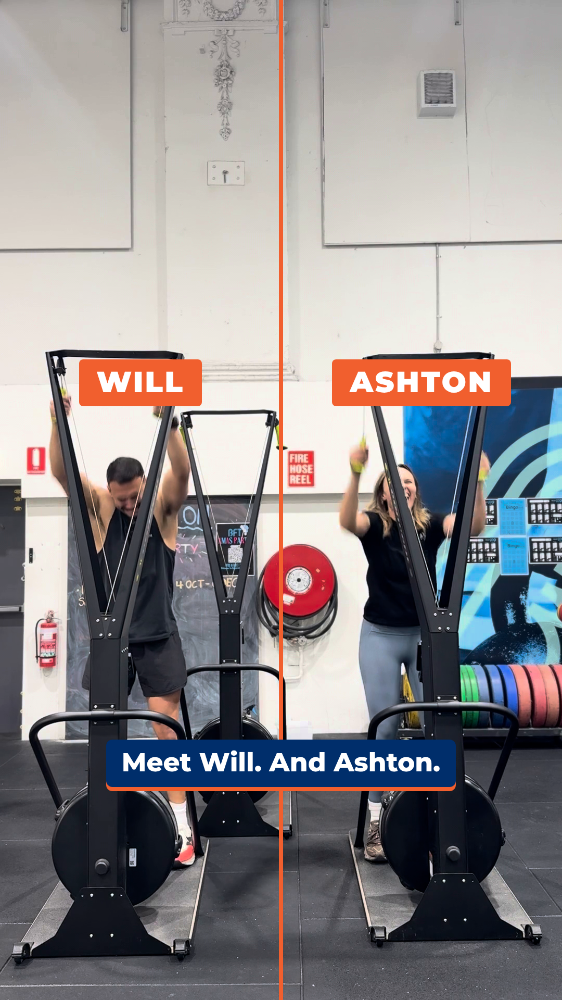
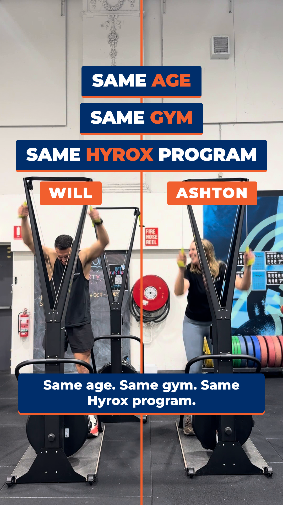
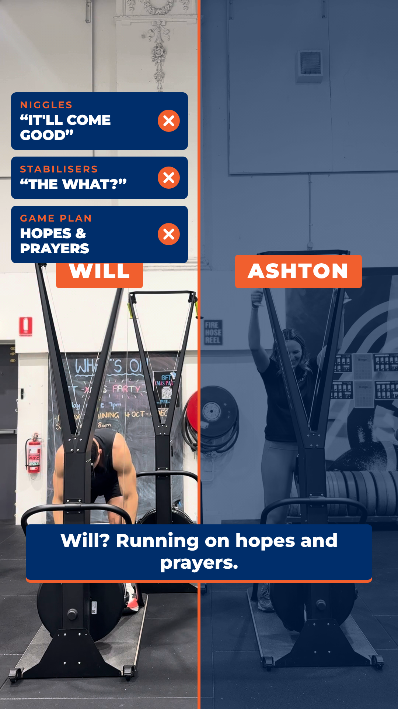
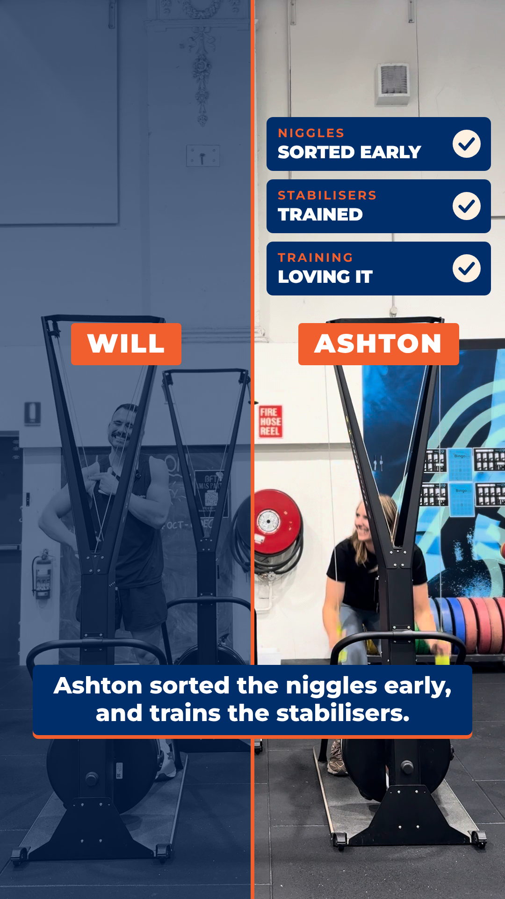
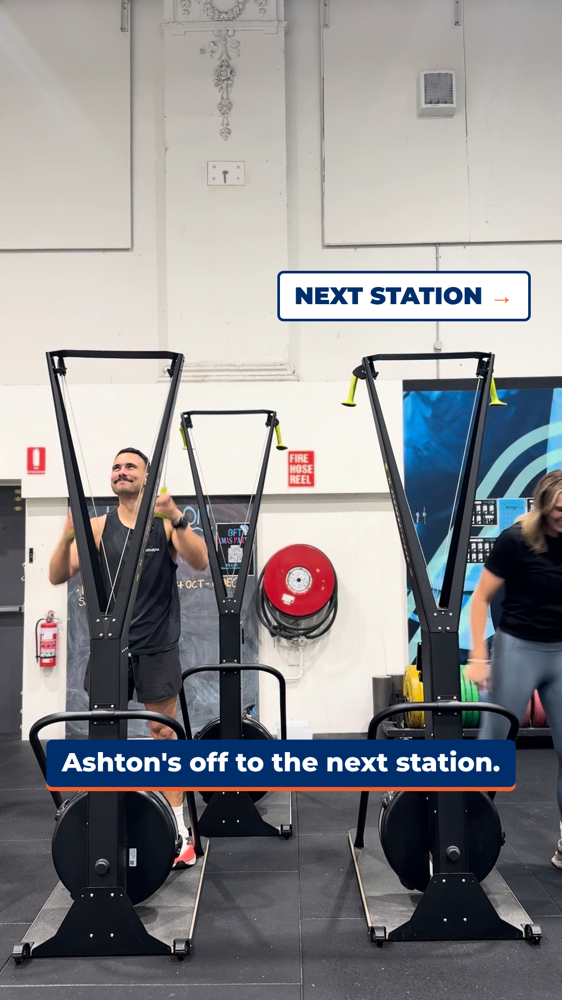
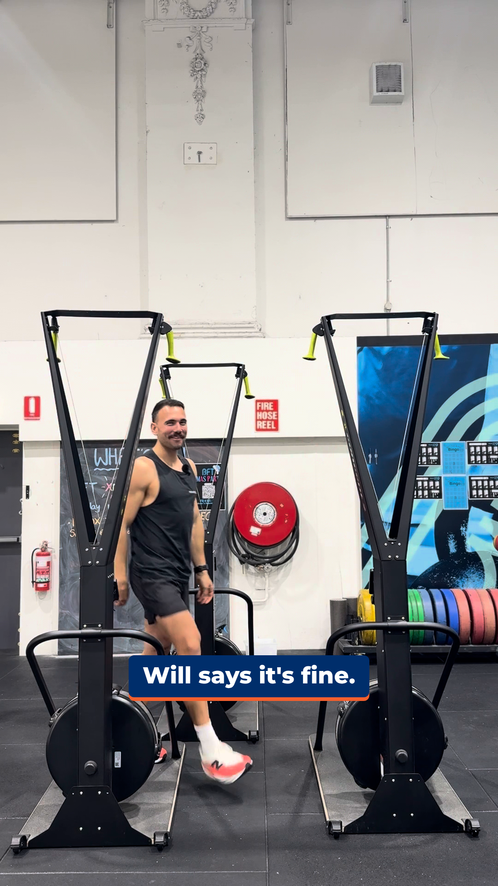
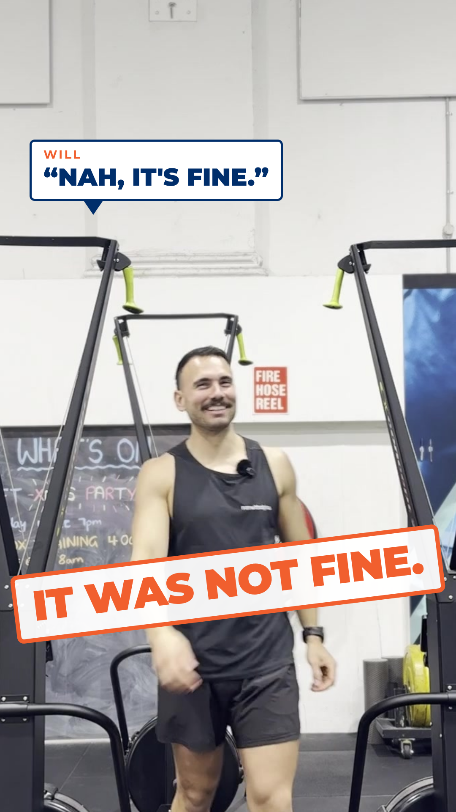
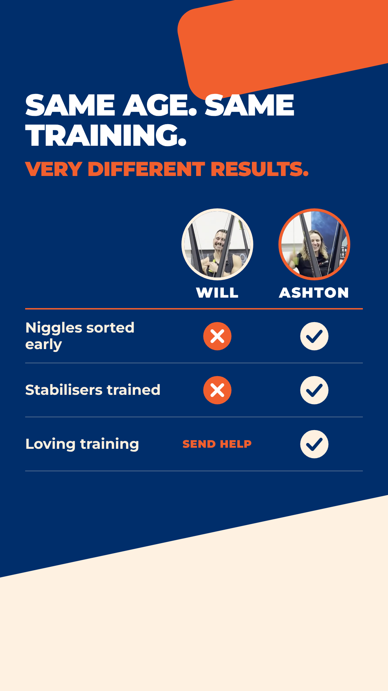
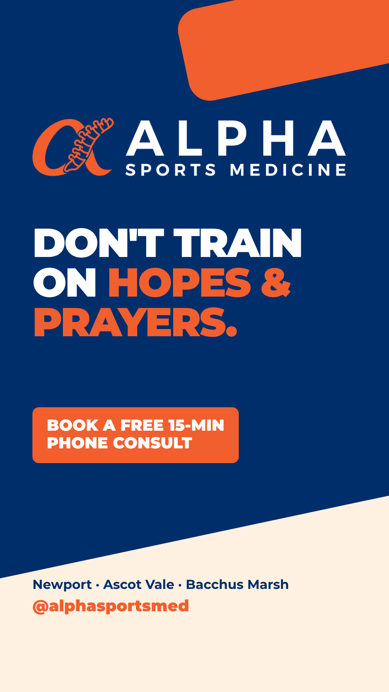

Orange divider splits the SkiErg two-shot; name tags WILL / ASHTON. VO: “Meet Will. And Ashton.”

SAME AGE · SAME GYM · SAME HYROX PROGRAM stack across the divider. VO: “Same age. Same gym. Same Hyrox program.”

Ashton's half dims; Will's cards: “It'll come good” ✗ · “The what?” ✗ · Hopes & prayers ✗. VO: “Will? Running on hopes and prayers.”

Will's half dims; Ashton's cards: Sorted early ✓ · Trained ✓ · Loving it ✓. VO: “Ashton sorted the niggles early, and trains the stabilisers.”

Divider gone, full screen. Ashton heads out — NEXT STATION →. VO: “Ashton's off to the next station.”

Will walks to camera grinning; slow push-in. VO: “Will says it's fine.”

Freeze-frame punch-in on the grin; bubble “Nah, it's fine.”; stamp slams IT WAS NOT FINE. VO: “It was not fine.”

Navy scorecard, Will vs Ashton: niggles, stabilisers, loving training (SEND HELP). VO: “Same age. Same training. Very different results.”

Alpha logo, DON'T TRAIN ON HOPES & PRAYERS., free 15-min phone consult, clinics, @alphasportsmed. VO: “Don't train on hopes and prayers. Alpha Sports Medicine.”